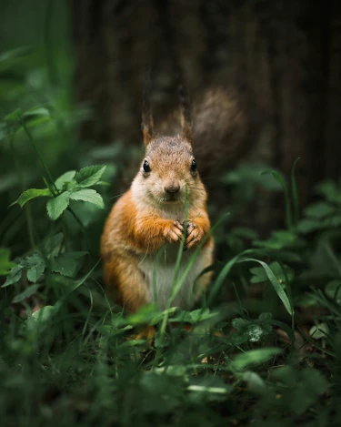

Squirrel
Instructions:
Body
2 ch
Round 1: 8 sc in second stitch from hook to make a ring of eight stitches (8)
Round 2: sc in each stitch around (16)
Round 3: sc in each stitch around (16)
Round 4: sc in first 7 stitches, inc in the next 2 stitches, and sc in last 7 stitches (18)
Round 5: sc in each stitch around (18)
At this point I would add the eyes.
Round 6: sc in first stitch, dec 8 times, sc in the last st (10)
Rounds 7-11: sc in each of stitch around (10)
Cut and tie.
Tail
10 ch
sl in the first ch st (the only furthest from the hook)
Rounds 1-4: sc in each st around (10)
Round 5: inc in the first st, sc in the next 4 stitches, and inc in the next stitch, sc in the last 4 stitches (12)
Round 6-7: sc in each stitch around (12)
Round 8: inc in the first st, sc in the next 5 stichets, inc in the next stitch, sc in the last 5 stitches (14)
ch then crochet in other direction. Begin making rows.
Row 1: dec, sc in the next 3 stitches, dec, ch
Row 2: dec, sc in the next stitch, dec
Cut and tie with a long string tail. Use the tail to sew the top of the tail to the top of round four.
(tip: if you tie the edges of the last round (round 8) together before you sew the top of the tail, the tail looks puffier.)
Ears
2ch
sc in the stitch furthest from the hook.
Cut and tie. Leave a tail for sewing.
Finish
Sew on the ears and tail. Pull the remaining ends of any strings inside the puppet.
Well done!